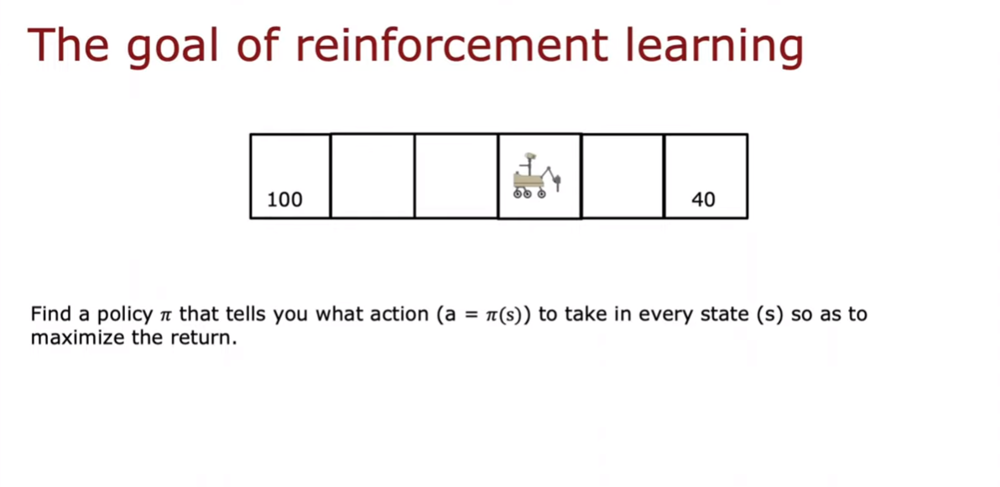

Reinforcement Learning
- Reinforcement Learning (RL) is a branch of Machine Learning. Unlike supervised learning where you specify what the model should be trained to
output, RL involves defining a reward function to tell the modelwhat it is doingwell or poorly, and let the model figure outhowto do things by choosing good actions at various states. - References:
- Hugging Face course
Policy

Return
Return is the sum of the rewards that the system gets weighted by the discount factor $\gamma$, where rewards in the future are are weighted by $\gamma$ raised to a higher power. Semantically this means that the system will be disincentivised to pursue delayed rewards.
Note that the concept of negative rewards also exists, where the system is incentivised to delay its pursuit of such rewards (eg. paying back a loan).
Markov Decision Process (MDP)
Framework where the next immediate future state only depends on the current state

State Action Value Function (Q Function)
This is expressed as the function $Q(s,a) = Return$ if: * You start in state $s$ * Take action $a$ (once) * Then behave optimally after that
Bellman Equation
- This equation is used to compute the Q Function.
- Take note of the following notation convention:
- Terminal states have the following Bellman Equation since they have no "next" state and action: $Q(s,a) = R(s)$
- The Bellman Equation can be split into 2 components:
Stochastic Environment
- The system may not have deterministic / fixed actions. Eg. The Mars Rover could slip and make a step in the opposite direction.
- This warrants the introduction of randomness into the system.
Returnis treated as a random variable.- The goal of the Bellman Equation would thus be to maximise the
Expected Return, which is analogous to the average of the random variableReturn.
- The Bellman Equation will include the
expected maximum returnof the next state.
Continuous State Spaces
- The initial simplified lunar landing rover example uses discrete states where it could be in 1 of 6 different positions.
- Real-life RL applications could involve states that take on continuous values.
- For example a vehicle could require the following continuous states:
- X-position
- Y-position
- Orientation / Facing
- Speed in x-direction
- Speed in y-direction
- Turning speed
- These continuous states are represented using a vector. Note that this vector can also contain discrete values if needed.
Deep RL
- Deep RL will be discussed using the example of the Lunar Lander.
- x and y refer to horizontal and vertical distances. $\dot{x}$ and $\dot{y}$ refer to their corresponding velocities.
- $\theta$ refers to the lander's angle and $\dot{\theta}$ refers to the velocity of its tilting.
- $r$ and $l$ are binary states referring to the grounding of the right and left legs of the lander.
- Final layer with a single neuron is used to output $Q(s,a)$ which will also be referred to as $y$.
- $a$ is a component of vector $x$ that comprises booleans representing the 4 actions to take.
-
Nothing = no thrusters; left = left thrusters; right = right thruster; main = main thruster
-
General concept is to:
- Use Bellman's Equation to create a large dataset of multiple $\vec{x}$ and $y$
- Use supervised learning to learn a mapping from $\vec{x}$ to $y$
- The algorithm to do this is called the Deep Q Network (DQN) method:
- A neural network $Q$ is randomly initialised similar to what is normally done for weight matrices. This initialisation is a random guess of what the $Q$ function should be.
- Generate the replay buffer (10,000 training examples) by feeding random $(s,a)$ into the neural network - which outputs the $Q(s,a)$ function. Record the resulting states and rewards $(R(s),s')$.
- A new neural network $Q_{new}$ is trained to map current (state and action) $x$, to the Bellman Equation $y$. The $Q(s',a')$ component of the Bellman Equation is obtained by passing $x = (s',a')$ into the initial $Q from step 1 for all 4 possible values of $a'$.
- $Q_{new}$ replaces the old $Q$ function.
-
Steps 1 to 4 are repeated several times. With every iteration, the neural network will become a better estimate for the $Q$ function.
-
The DQN architecture can be improved by:
- Setting its inputs to solely contain the states $s$ without the actions $a$.
- Changing the final layer to comprise a neuron to predict each action such that all actions can be predicted simultaneously.
Epsilon Greedy Policy
- Used to pick actions while system is still in the process of learning.
- Comprises a greedy
exploitationcomponent that picks an action $a$ that maximises the $Q$ function. - Comprises a second $\epsilon$
explorationhyperparameter to randomly try another action. This is to overcome the problem of potentially having a bad initialisation of $Q$ as exploration enables the system to try an action that it may have be initialised to recognise to result in a poor reward. - Take note that RL is very sensitive to hyperparameters, which makes optimisation more difficult than supervised learning.
DQN Mini-Batch and Soft Updates
- Mini-batching results in a more efficient optmisation step. For example SGD using all samples would take more time as it requires computing the gradient of the loss function which is an average.
- However this may abruptly compromise the update of $Q$ to $Q_{new}$ if the mini-batch happens to produce a bad update
- Soft update addresses this problem by assigning hyperparameterised coefficients to weight the amount of update to the old neural network weights and biases.
Q-Learning
- This is another method of RL. It differs from DQN in that it uses a
Q Tableinstead of a neural network to model the $Q$ function. - The
Q Tablehas rows that represent states, columns that represent actions, and reward values ($Q$ function output). - Q-learning is a
values-basedlearning algorithm. Value based algorithms updates the value function based on an equation (particularly Bellman equation). - The idea is that an optimal value function leads to an optimal policy $\pi^*$ with the objective of minimiing the loss between the predicted and target value to approximate the true action-value function.
- This differs from
policy-basedmethods where we directly learn to approximate $\pi^*$ without having to learn a value function. The idea is to parameterise the policy. For instance, using a neural network $\pi_{\theta}$, this policy will output a probability distribution over actions (stochastic policy). The objective then is to maximize the performance of the parameterized policy using gradientascentby controlling the parameter $\theta$ that will affect the distribution of actions over a state. - Q-learning uses
Temporal Differences(TD) to estimate the value of the final expected Q*(s,a). Temporal difference is an agent learning from an environment through episodes with no prior knowledge of the environment. - Q-learning algorithm:
- Initialise Q-Table with 0 values.
- Choose and perform an action. This can be based on an Epsilon Greedy Policy where $\epsilon$ is set to a very high value in the first few iterations to encourage random exploration instead of greedy exploitation. The first action is chosen randomly given that the initial Q-Table only has 0 values.
- Measure reward.
- Update Q-Table.
- Repeat steps 2 - 4 until a desired state is reached.
- References:
- A Beginner's Guide to Q-Learning article